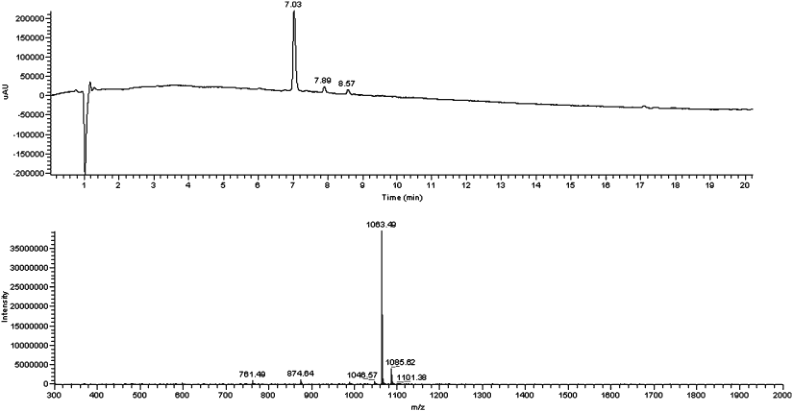
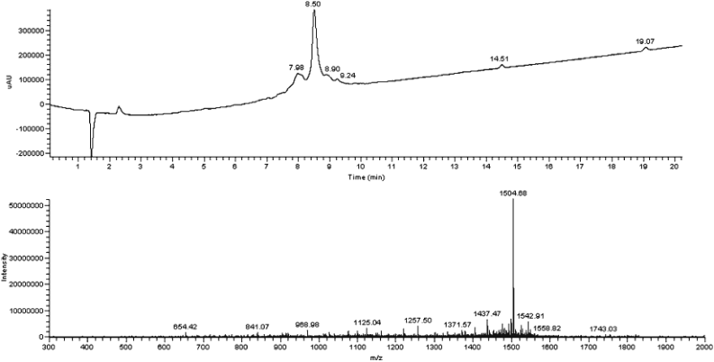

Chapter 17
基于Fmoc保护基策略的微波辅助固相多肽合成（CEM）
Microwave-Assisted Solid-Phase Peptide Synthesis
Based on the Fmoc Protecting Group Strategy (CEM)
作者：Grace S. Vanier
出处：Methods in Molecular Biology, vol. 1047 (2013, Humana/Springer)
摘要 (Abstract)
微波辅助多肽合成（microwave-assisted peptide synthesis）已成为多肽化学家合成常规序列和困难序列（difficult peptide sequences）时最广泛使用的工具之一。微波技术显著缩短了合成时间，同时提高了所产多肽的质量。微波能量使大多数氨基酸偶联（amino acid coupling）反应仅需5分钟即可完成。Fmoc脱保护（Fmoc removal）也可在微波条件下加速，在大多数情况下将反应时间从至少15分钟缩短至仅3分钟。
常见的副反应（side reactions）如消旋化（racemization）和天冬酰胺亚胺形成（aspartimide formation）可以通过优化后的方法轻松控制，并可作为常规操作应用。本协议概述了手动（manual）和自动化（automated）微波辅助多肽合成的详细操作流程，用于合成两条已知困难的多肽序列——ACP (65–74) 和 β-amyloid (1–42)，均能获得高纯度和高产率。
关键词（Key words）：微波辅助多肽合成（microwave-assisted peptide synthesis）、微波辐照（microwave irradiation）、固相多肽合成（solid-phase peptide synthesis）、困难多肽（difficult peptides）、酰基载体蛋白（acyl carrier protein）、β-淀粉样蛋白（beta-amyloid）。
【要点总结】 • 微波辅助SPPS可将偶联时间缩短至5 min，脱保护缩短至3 min • 对消旋化和天冬酰胺亚胺形成有优化控制方案 • 本章提供手动合成ACP (65–74)和自动合成β-amyloid (1–42)的完整流程
1 引言 (Introduction)
1.1 固相多肽合成的历史背景
近50年前，固相多肽合成方法（solid-phase peptide synthesis, SPPS）的开发改变了多肽化学领域，彻底革新了化学家合成多肽的方式[1]。固相过程消除了液相合成（solution phase synthesis）中每一步所需的后处理（workup）和纯化（purification），已成为研究规模多肽合成的首选方法。
尽管固相多肽合成已是一个成熟的工艺，并能常规产出良好纯度的多肽，但在多肽链聚集（aggregation）和特别难以合成的序列方面仍存在挑战。这推动了过去几十年中该领域的新发展，包括：
（1）改进的保护基策略（improved protection strategies）的设计；
（2）促进偶联反应的新试剂（new reagents for promoting the coupling reaction）的开发；
（3）不同固体载体（solid supports）的研究。
1.2 微波辐照在多肽合成中的应用
微波辐照（microwave irradiation）在有机合成中的应用因能提供更快的反应时间、更干净的产物和更高的产率而被化学家广泛使用[2–9]。微波辐照首次应用于多肽合成的报道见于1992年[10]。当时使用家用微波系统（domestic microwave system）合成了三条测试多肽，与常规合成相比实现了2至3倍的速率提升，且未观察到消旋化现象。这种效应在空间位阻较大的β-分支氨基酸（β-branched amino acids）偶联时最为显著。
尽管这项工作是多肽合成的重大突破，但未经改装的家用微波系统无法精确测量温度，且这种系统的重现性（reproducibility）非常困难。直到近十年后，商品化实验室级微波系统（commercial laboratory grade microwave systems）问世，这一研究才实现了其全部潜力。这些商品级系统配备了集成的温度控制和均匀的微波场（homogeneous microwave field），能够实现更均匀的加热。
1.3 微波加热机理
微波能量加热样品的机理是通过分子层面的直接相互作用，经由偶极旋转（dipole rotation）或离子传导（ionic conduction）实现，从而产生非常快速的加热。当暴露于微波辐照时，液体溶液中的离子和偶极子将旋转，试图跟随交变电场（alternating electric field）。分子有时间与电场对齐，但无法精确跟随振荡的电场。这导致偶极子或离子因随机碰撞而散逸能量，产生介电加热（dielectric heating）。
在多肽合成过程中，体系中存在许多可被微波能量快速加热的极性和离子物质。微波吸收体包括：
• 极性溶剂（polar solvents）
• 具有高极性肽键（peptide bond）的多肽骨架
• 末端胺基（terminal amine group）
• 偶联和脱保护反应的碱（bases）
• 裂解酸（cleavage acids）
• 极性/离子活化剂（polar/ionic activators）
由此产生的温度升高有助于打破由链内和链间缔合（intra- and inter-chain association）引起的多肽链聚集，使试剂更容易接近生长中的多肽链末端。
1.4 微波辅助SPPS的标准条件
微波辅助多肽合成的标准条件相当温和。我们用于碱敏感性Fmoc多肽合成的典型协议为：
• 脱保护（Deprotection）：20% piperidine（哌啶），75°C，3 min
• 偶联（Coupling）：HBTU + DIEA，75°C，5 min
由于微波辅助多肽合成中使用的温度较高，副反应的可能性增加。
1.5 消旋化问题及其解决方案
活化氨基酸在偶联步骤中的消旋化（racemization）即使在常规合成条件下也是一个已知问题，尤其是对Cys和His残基。为研究此问题，合成了一条包含所有天然氨基酸的模型20肽（VYWTSPFMKLIHEQCNRADG-NH₂），分别在常规和微波条件下进行合成[11]。
将该多肽在6N DCl/D₂O中水解，产生的游离氨基酸经GC-MS分析以计算消旋化程度。结果如下：
• 室温合成：粗品纯度68%，各氨基酸消旋化最大值为1.5%
• 微波合成（初始方案：两阶段Nᵅ-脱保护30 s/50 W + 3 min/50 W，T_max=80°C；偶联5 min/40 W，T_max=80°C）：粗品纯度提升至76%，但Cys和His出现显著消旋化
研究者探索了多种方法来降低消旋化：
• 添加HOBt作为添加剂
• 使用PyBOP替代活化剂
• 使用位阻更大的碱TMP（2,4,6-trimethylpyridine）和NMM（4-methylmorpholine）[12]
然而，所有在微波条件下降低消旋化的尝试均告失败。最终成功的方案是：
• 将Cys和His的偶联温度从80°C降低至50°C
• 采用两阶段加热法：0 W加热120 s，然后40 W加热240 s
• 进一步方案：Cys和His的偶联在室温下进行
使用针对Cys和His的改良协议，可以利用微波加热的优势进行其他氨基酸的偶联，同时保持较低的消旋化水平。研究还表明，一旦Cys和His被接入多肽链后，后续在80°C下的偶联不会导致这些残基的消旋化增加，这表明消旋化仅限于活化酯状态（activated ester state）。
1.6 天冬酰胺亚胺形成及其抑制
另一个有充分记录的多肽合成潜在副反应是天冬酰胺亚胺（aspartimide）的形成。该副反应发生在含Asp序列的Fmoc脱保护过程中，当Asp的羧基相邻残基为Gly、Asn、Ser或Ala时。每次掺入Asp后的脱保护都会因副反应的积累而导致多肽纯度下降。
上述用于研究微波辐照消旋化的20肽模型同样含有Asp-Gly序列，易受天冬酰胺亚胺形成的影响[11]。结果：
• 首次微波合成：20% piperidine于80°C脱保护 → 大量天冬酰胺亚胺形成
• 在piperidine脱保护液中添加0.1 M HOBt → 减少了天冬酰胺亚胺形成，粗品纯度提高10%
• 用piperazine（哌嗪）替代piperidine → 进一步减少天冬酰胺亚胺形成，尽管脱保护试剂的pKa较低，但未观察到缺失产物（deletion products）
1.7 微波辅助SPPS的应用领域
微波辅助多肽合成已成为困难多肽合成的首选方法，同时也广泛用于学术界和工业界中各种不同类型多肽的常规合成[13–16]。使用微波辐照合成的多肽保持完全的生物活性，已被用于众多研究领域，包括：
• 人类松弛素多肽（human relaxin peptides）[17, 18]
• 急性髓系白血病中的nucleophosmin突变（acute myeloid leukemia）[19]
• 阿尔茨海默病amyloid β-peptide [20, 21]
• 固体界面性质的控制（control interfacial properties）[22]
• GPCR-多肽相互作用（GPCR-peptide interactions）[23]
• 人类黑皮素受体（human melanocortin receptors）[24]
• 人类urotension-II [25]
• 胰岛素（insulin）[26–28]
• 烟碱型乙酰胆碱受体（nicotinic acetylcholine receptors）[29]
• 富脯氨酸抗菌肽（proline-rich antibacterial peptides）[30, 31]
• 人类载脂蛋白C-I（human apolipoprotein C-I）[32]
• 胰高血糖素样肽-1（glucagon-like peptide-1）[33]
微波辐照还可用于促进修饰肽的合成，这些修饰包括：染料标记（labeling with dyes）、荧光基团（fluorophores）和金属光谱标签（metal spectroscopic labels）、脂化（lipidation）、环化（cyclization）、磷酸化（phosphorylation）和糖基化（glycosylation）。
此外，微波能量已用于加速合成多种肽模拟物（peptidomimetics），包括：
• β-肽（β-peptides）
• 类肽（peptoids）
• 肽核酸（peptide nucleic acid, PNA）-肽杂合体——一种能以高结合特异性和亲和力选择性靶向DNA/RNA序列的新型多肽类别[16]
1.8 本章协议概述
本协议概述了手动和自动化微波辅助多肽合成的一般流程。
手动合成：选择酰基载体蛋白（acyl carrier protein, ACP）(65–74)序列作为代表性困难多肽。
自动合成：制备β-amyloid (1–42)，另一条已知难以合成的多肽。
两种方法均能在优异的纯度和良好的产率下提供多肽，且所需时间仅为常规室温合成条件的一小部分。
【引言要点总结】 • SPPS由Merrifield于1963年发明，消除了液相合成中逐步纯化的需求 • 微波辐照通过偶极旋转和离子传导实现快速介电加热 • 标准微波条件：脱保护20% piperidine/75°C/3 min，偶联HBTU+DIEA/75°C/5 min • Cys和His偶联需降温至50°C或室温以抑制消旋化 • 添加0.1 M HOBt或使用piperazine可抑制天冬酰胺亚胺形成 • 微波SPPS广泛用于困难多肽和各类修饰肽/肽模拟物的合成
2 材料 (Materials)
为获得最佳结果，所有试剂应使用高质量溶剂（ACS grade及以上）新鲜配制，除非另有说明。应按照用户的安全程序穿戴防护装备，并参考试剂制造商的材料安全数据表（MSDS）。遵循这些指南进行试剂的去污、处理和处置或任何有害材料。
2.1 ACP (65–74)手动微波辅助多肽合成
| 编号 | 项目 | 详情 |
|---|---|---|
| 1 | 设备（Equipment） | 单模微波合成仪（Single mode microwave synthesizer），配置用于手动多肽合成，配备光纤温度探头（fiber optic temperature probe）——Discover SPS微波辅助多肽合成仪（CEM Corporation）[见Note 1] |
| 2 | 反应容器（Vessel） | 25 mL聚丙烯烧结容器（polypropylene fritted vessel），配备Teflon密封球和旋塞接头（capped luer fitting）（CEM Corporation） |
| 3 | 树脂（Resin） | 0.1 mmol Fmoc-Gly-Wang树脂（0.164 g, 0.61 mmol/g取代度, 100–200 mesh）[见Note 2] |
| 4 | 洗涤溶剂（Wash solvents） | N,N-二甲基甲酰胺（DMF）和二氯甲烷（DCM），置于合适的洗瓶中[见Note 3] |
| 5 | Fmoc脱保护液 | 100 mL 20% piperidine/DMF + 0.1 M HOBt（1-羟基苯并三唑）。此溶液可保存长达一个月[见Notes 4, 5] |
| 6 | Fmoc-AA-OH | 称取0.5 mmol（5当量）ACP (65–74)序列（VQAAIDYING）中各Fmoc-氨基酸至独立小瓶中（见表1）[见Notes 6, 7] |
| 7 | 活化剂（Activator） | 向每个氨基酸小瓶中加入0.190 g HBTU（N-[(1H-苯并三氮唑-1-基)(二甲氨基)亚甲基]-N-甲基甲铵六氟磷酸盐N-氧化物）[见Notes 8, 9] |
| 8 | 活化剂碱液 | 50 mL 0.25 M DIEA（N,N-二异丙基乙胺）/DMF [见Note 10] |
表1 ACP (65–74)手动微波合成的氨基酸用量（Table 1）
| 氨基酸（Amino Acid） | 小瓶数 | 分子量（MW） | 质量（Mass, g） |
|---|---|---|---|
| Fmoc-Ala-OH | 2 | 311.3 | 0.156 |
| Fmoc-Asn(Trt)-OH | 1 | 596.7 | 0.298 |
| Fmoc-Asp(OtBu)-OH | 1 | 411.5 | 0.206 |
| Fmoc-Gln(Trt)-OH | 1 | 610.7 | 0.305 |
| Fmoc-Ile-OH | 2 | 353.4 | 0.177 |
| Fmoc-Tyr(tBu)-OH | 1 | 459.6 | 0.230 |
| Fmoc-Val-OH | 1 | 339.4 | 0.170 |
2.2 β-Amyloid (1–42)自动化微波辅助多肽合成
| 编号 | 项目 | 详情 |
|---|---|---|
| 1 | 设备 | 自动化微波辅助多肽合成仪——Liberty微波辅助多肽合成仪（CEM Corporation） |
| 2 | 树脂 | 0.1 mmol Fmoc-PAL-PEG-PS（0.5 g, 0.20 mmol/g取代度, 100–200 mesh）[见Note 2] |
| 3 | 洗涤溶剂 | 8 L DMF和100 mL DCM，置于4 L瓶中[见Note 3] |
| 4 | Fmoc脱保护液 | 800 mL 20% piperidine/DMF + 0.1 M HOBt，置于1 L瓶中[见Notes 4, 5]。可保存一个月 |
| 5 | Fmoc-AA-OH | 0.2 M氨基酸/DMF溶液，β-amyloid (1–42)序列（DAEFRHDSGYEVHHQKLVFFAEDVGSNKGAIIGLMVGGVVIA）各Fmoc-氨基酸分别置于125 mL瓶中（见表2）[见Notes 6, 7, 11]。建议新鲜配制，大多数氨基酸溶液可保存2周 |
| 6 | 活化剂 | 55 mL 0.5 M HBTU/DMF，置于250 mL棕色瓶中。盖紧瓶盖振摇确保完全溶解，可能需要10 min [见Notes 8, 9] |
| 7 | 活化剂碱液 | 30 mL 2.0 M DIEA/NMP，置于250 mL瓶中[见Notes 10, 12] |
| 8 | 树脂管 | 50 mL聚丙烯离心管 |
表2 β-Amyloid (1–42)自动化微波合成的0.2 M氨基酸溶液体积（Table 2）
| 氨基酸（Amino Acid） | 分子量（MW） | 质量（Mass, g） | 体积（Volume, mL） |
|---|---|---|---|
| Fmoc-Ala-OH | 311.3 | 0.685 | 11 |
| Fmoc-Arg(Pbf)-OH | 648.8 | 0.778 | 6 |
| Fmoc-Asn(Trt)-OH | 596.7 | 0.597 | 5 |
| Fmoc-Asp(OtBu)-OH | 411.5 | 0.658 | 8 |
| Fmoc-Gln(Trt)-OH | 610.7 | 0.611 | 5 |
| Fmoc-Glu(OtBu) | 425.5 | 0.681 | 8 |
| Fmoc-Gly-OH | 297.3 | 0.951 | 16 |
| Fmoc-His(Trt) | 619.7 | 1.983 | 16 |
| Fmoc-Ile-OH | 353.4 | 0.565 | 8 |
| Fmoc-Leu-OH | 353.4 | 0.424 | 6 |
| Fmoc-Lys(Boc)-OH | 468.5 | 0.562 | 6 |
| Fmoc-Met-OH | 371.5 | 0.372 | 5 |
| Fmoc-Phe-OH | 387.4 | 0.620 | 8 |
| Fmoc-Ser(tBu)-OH | 383.4 | 0.460 | 6 |
| Fmoc-Tyr(tBu)-OH | 459.6 | 0.460 | 5 |
| Fmoc-Val-OH | 339.4 | 1.086 | 16 |
2.3 多肽释放与侧链脱保护（Peptide Release and Side Chain Deprotection）
| 编号 | 项目 | 详情 |
|---|---|---|
| 1 | 设备 | 单模微波合成仪，配置用于手动多肽裂解，配备光纤温度探头——Accent微波辅助多肽裂解系统（CEM Corporation） |
| 2 | 设备 | 离心机（centrifuge） |
| 3 | 设备 | 冻干机（lyophilizer） |
| 4 | 反应容器 | 25 mL聚丙烯烧结容器，配备Teflon密封球和旋塞接头（CEM Corporation） |
| 5 | 产物收集管 | 50 mL聚丙烯离心管 |
| 6 | 裂解液（Cleavage Cocktail） | 向9.25 mL三氟乙酸（TFA）中加入0.25 mL水、0.25 mL三异丙基硅烷（TIS）和0.25 mL 3,6-二氧杂-1,8-辛烷二硫醇（DODT），总体积10 mL。建议在裂解前新鲜配制[见Note 13] |
| 7 | 溶剂 | 100 mL冷乙醚（cold diethyl ether） |
2.4 多肽分析（Peptide Analysis）
| 编号 | 项目 | 详情 |
|---|---|---|
| 1 | 设备 | 分析型高效液相色谱（HPLC）系统，配备质谱仪——Thermo Fisher Scientific Surveyor HPLC with LCQ Advantage离子阱质谱仪 |
| 2 | 分析柱 | ACP (65–74)：Waters Atlantis C18柱，3 μm, 2.1 × 100 mm；β-amyloid：Waters Symmetry300 C4柱, 5 μm, 2.1 × 150 mm |
| 3 | 溶剂A | HPLC级水 + 0.1%甲酸（formic acid） |
| 4 | 溶剂B | HPLC级乙腈（acetonitrile） + 0.1%甲酸 |
【材料要点总结】 • 手动合成使用Discover SPS微波仪；自动合成使用Liberty微波仪（均为CEM Corporation） • ACP使用Fmoc-Gly-Wang树脂（酸敏感）；β-amyloid使用Fmoc-PAL-PEG-PS树脂（酰胺） • 脱保护液含20% piperidine + 0.1 M HOBt（抑制天冬酰胺亚胺） • 裂解液配方：TFA/H₂O/TIS/DODT = 92.5:2.5:2.5:2.5
3 方法 (Methods)
3.1 ACP (65–74)手动微波辅助多肽合成
3.1.1 树脂准备（Resin Preparation）
1. 将旋塞塞（luer plug）置于反应容器底部。安装光纤夹（fiber optic clip）并插入热阱（thermowell）。
2. 称取0.164 g Fmoc-Gly-Wang树脂加入反应容器。
3. 加入7 mL DMF至树脂中，振摇10 s。
4. 等待15 min使树脂溶胀（swell）。
5. 拔下旋塞塞，立即将反应容器置于真空歧管（vacuum manifold）上。通过真空抽滤去除溶剂。
6. 加入5 mL DMF洗涤树脂，振摇10 s。
7. 真空抽滤去除溶剂，重新装上旋塞塞。
3.1.2 Fmoc脱保护（Fmoc Removal）
1. 加入7 mL 20% piperidine/DMF + 0.1 M HOBt溶液至树脂。振摇10 s [见Note 14]。
2. 将容器置于支架中，插入光纤探头（fiber optic probe）[见Note 15]。
3. 将容器组件置于微波腔中。编程脱保护方法（表3）并按播放键[见Note 16]。
4. 从微波腔中取出容器组件，拔下旋塞塞，立即置于真空歧管上。真空抽滤去除脱保护混合液。
5. 加入5 mL DMF洗涤树脂，振摇10 s。真空抽滤去除溶剂。
6. 重复步骤5四次（共洗涤5次）。重新装上旋塞塞。
3.1.3 氨基酸偶联（Amino Acid Coupling）
1. 向含0.298 g Fmoc-Asn(Trt)-OH和0.190 g HBTU的小瓶中加入4.0 mL 0.25 M DIEA/DMF。盖紧小瓶振摇，确保氨基酸和活化剂完全溶解。必要时涡旋混合至完全溶解[见Note 17]。
2. 将预活化氨基酸溶液加入树脂。振摇10 s。
3. 将容器置于支架中，插入光纤探头[见Note 15]。
4. 将容器组件置于微波腔中。编程偶联方法（表3）并按播放键[见Note 16]。
5. 从微波腔中取出容器组件，拔下旋塞塞，立即置于真空歧管上。真空抽滤去除偶联混合液。
6. 加入5 mL DMF洗涤树脂，振摇10 s。真空抽滤去除溶剂。
7. 重复步骤6四次（共洗涤5次）。重新装上旋塞塞[见Note 18]。
3.1.4 多肽链延伸（Peptide Chain Elongation）
1. 按以下顺序对序列中每个后续氨基酸重复3.1.2和3.1.3节操作：Fmoc-Ile-OH、Fmoc-Tyr(tBu)-OH、Fmoc-Asp(OtBu)-OH、Fmoc-Ile-OH、Fmoc-Ala-OH、Fmoc-Ala-OH、Fmoc-Gln(Trt)-OH、Fmoc-Val-OH [见Note 19]。
2. 重复3.1.2节步骤1–4去除N端Val的Fmoc基团。
3. 加入5 mL DCM洗涤树脂，振摇10 s。真空抽滤去除溶剂。
4. 重复步骤3四次（共洗涤5次）。重新装上旋塞塞。
表3 手动微波辅助多肽合成的微波方法参数（Table 3）
| 方法名称（Method Name） | 功率 Power (W) | 温度 Temp (°C) | Delta Temp (°C) | 时间 Time (min:s) |
|---|---|---|---|---|
| 脱保护（Deprotection） | 35 | 75 | 5 | 3:00 |
| 偶联（Coupling） | 20 | 75 | 5 | 5:00 |
| 裂解（Cleavage） | 15 | 38 | 5 | 30:00 |
ACP (65–74)序列：H-Val-Gln-Ala-Ala-Ile-Asp-Tyr-Ile-Asn-Gly-OH
（从C端到N端合成，Gly预载于Wang树脂）
【手动合成ACP要点总结】 • 树脂：Fmoc-Gly-Wang，0.1 mmol规模 • 脱保护：20% piperidine + 0.1 M HOBt，75°C，3 min，功率35 W • 偶联：HBTU/DIEA活化，75°C，5 min，功率20 W • 每步偶联用5当量氨基酸（0.5 mmol）+ 0.190 g HBTU • 每步后DMF洗涤5次 • ACP序列(VQAAIDYING)是经典的"困难序列"测试模型
3.2 β-Amyloid (1–42)自动化微波辅助多肽合成
3.2.1 方法编程（Method Programming）
1. 使用PepDriver™控制器软件中的Sequence Editor输入多肽序列（从N端到C端）：DAEFRHDSGYEVHHQKLVFFAEDVGSNKGAIIGLMVGGVVIA。
2. 在Method Editor中高亮步骤1创建的序列，选择以下选项：Skip Resin Load = No，C-terminus = amide [见Note 20]，Final Deprotection = Yes，Scale = 0.10，Resin = Standard-Resin，Cleaving = Non-cleavage，Final Depr. = 0.10。同时在树脂信息栏输入树脂取代度。
3. 在Method Editor中确认每个氨基酸选择了"0.10-Single"方法，但组氨酸残基需选择"0.10-Single 50C Temp"方法，精氨酸残基需选择"0.10-Double Arg"方法[见Notes 21, 22]。
3.2.2 仪器设置（Instrument Set-Up）
1. 开始合成前，确认系统已完成所有常规维护程序。
2. 在每个需要的位置放置浸入管过滤器（dip tube filter），将以下试剂装载到系统上：洗涤溶剂（DMF和DCM）、Fmoc脱保护液、Fmoc-AA-OH、活化剂和活化剂碱液。必要时使用Change Bottle功能[见Note 23]。
3. 确认以下事项：废液容器有足够容量、充足的氮气供应、所有必要试剂已装载、所有瓶盖已拧紧。
4. 称取0.5 g Fmoc-PAL-PEG-PS树脂至50 mL聚丙烯离心管中，将管置于系统位置1 [见Note 24]。
5. 将3.2.1节创建的方法加载到PepDriver软件的位置1。
6. 按Play键启动方法。
7. 系统将进行初始化准备合成，然后系统将自动执行合成所需的所有步骤，无需用户干预，包括：树脂转移至反应容器、树脂溶胀、Fmoc脱保护、氨基酸偶联、多肽链延伸，最后根据编程方法将树脂返回到含已完成多肽的管中。
8. 合成完成后，多肽树脂将在位置1的树脂管中，伴有DMF和DCM混合液。
9. 使用DCM洗涤离心管，将多肽树脂转移至25 mL聚丙烯烧结容器。真空抽滤去除溶剂。
10. 加入5 mL DCM洗涤树脂，振摇10 s。真空抽滤去除溶剂。
11. 重复步骤10四次（共洗涤5次）。在容器上装上旋塞塞。
β-Amyloid (1–42)序列：H-Asp-Ala-Glu-Phe-Arg-His-Asp-Ser-Gly-Tyr-Glu-Val-His-His-Gln-Lys-Leu-Val-Phe-Phe-Ala-Glu-Asp-Val-Gly-Ser-Asn-Lys-Gly-Ala-Ile-Ile-Gly-Leu-Met-Val-Gly-Gly-Val-Val-Ile-Ala-OH
（42个氨基酸，C端为酰胺，使用PAL-PEG-PS树脂）
【自动合成β-amyloid要点总结】 • 仪器：CEM Liberty自动化微波多肽合成仪 • 树脂：Fmoc-PAL-PEG-PS，0.1 mmol规模，C端酰胺 • His残基：50°C偶联（防消旋化），使用"0.10-Single 50C Temp"方法 • Arg残基：双偶联，使用"0.10-Double Arg"方法（防γ-内酰胺形成） • 其他氨基酸：标准75°C/5 min单偶联 • 全程自动化，合成后树脂转移至烧结容器洗涤
3.3 多肽释放与侧链脱保护（Peptide Release and Side Chain Deprotection）
1. 加入10 mL新鲜配制的裂解液至反应容器，振摇10 s [见Notes 25, 26]。
2. 将容器置于支架中，将光纤探头插入热阱[见Note 15]。
3. 将容器组件置于微波腔中。编程裂解方法（见表3）并按播放键[见Note 16]。
4. 在产物收集位置放置一个干净的50 mL离心管。从微波腔中取出容器组件，拔下旋塞塞，立即置于真空歧管上。通过真空抽滤将裂解的多肽转移至50 mL离心管中。用少量TFA（最多1 mL）洗涤残留多肽。
5. 加入35 mL冰冷的乙醚（ice-cold diethyl ether）至多肽中沉淀。
6. 让多肽在冰上或冷冻室中沉淀至少30 min。
7. 离心沉淀的多肽以分离粗产物：1,300 × g离心4 min。小心倾倒上清液。用额外10 mL冷乙醚洗涤多肽，然后重复离心以分离沉淀。
8. 将多肽溶于最少体积（<5 mL）的10%醋酸水溶液中。用液氮冷冻样品，冻干（lyophilize）过夜。
产率数据：
• ACP (65–74)：102 mg（理论产量106 mg，分离粗品产率96%）
• β-Amyloid (1–42)：325 mg（理论产量451 mg，分离粗品产率72%）
【裂解与脱保护要点总结】 • 裂解液：TFA/H₂O/TIS/DODT = 92.5:2.5:2.5:2.5（体积比） • 微波裂解条件：15 W，38°C，30 min（低温避免副反应） • 裂解后用冰冷乙醚沉淀、离心分离 • 溶于10%醋酸水溶液后液氮冷冻、冻干 • 注意：裂解前必须用DCM彻底洗净树脂中的DMF（防放热反应）
3.4 多肽分析（Peptide Analysis）
1. 将少量多肽溶于水中（少于1 mL），逐滴加入甲醇（methanol，少量）使多肽完全溶解。超声（sonicate）辅助溶解。
2. 使用以下条件进行LC-MS分析： ACP (65–74)：Waters Atlantis C18柱，5–95% Solvent B梯度，20 min β-Amyloid (1–42)：Waters Symmetry300 C4柱，40°C，5–95% Solvent B梯度，25 min
3. 参见Figures 1和2获取ACP (65–74)和β-amyloid (1–42)的LC-MS色谱图和质谱图： ACP (65–74)粗品纯度：87% β-Amyloid (1–42)粗品纯度：90%
图1 ACP (65–74)微波合成的粗品HPLC色谱图和质谱图（Figure 1）
主峰出峰时间7.03 min，质量数1,063.49，对应ACP (65–74)的[M + H]⁺。

图2 β-Amyloid (1–42)微波合成的粗品HPLC色谱图和质谱图（Figure 2）
主峰出峰时间8.50 min，质量数1,504.68，对应β-amyloid (1–42)的[M + 3H]³⁺。

【分析要点总结】 • ACP用C18柱分析；β-amyloid用C4柱（疏水性更强需C4） • 流动相：水/乙腈 + 0.1%甲酸 • ACP粗品纯度87%；β-amyloid粗品纯度90% • 质谱确认：ACP [M+H]⁺ = 1063.49；β-amyloid [M+3H]³⁺ = 1504.68
4 注释（Notes）
以下为实验操作中的详细注意事项和替代方案。
【Note 1】 手动微波辅助多肽合成也可在多模微波系统（multimode microwave system）中进行[34]。
【Note 2】 任何用于固相多肽合成的标准树脂都可用于微波辐照，包括但不限于：聚苯乙烯（polystyrene, PS）树脂、聚乙二醇-PS（PEG-PS）树脂、PEG树脂和交联乙氧基化丙烯酸酯（cross-linked ethoxylate acrylate, CLEAR）树脂。
【Note 3】 替代方案：可使用N-甲基吡咯烷酮（NMP）作为洗涤溶剂以及配制试剂的溶剂。
【Note 4】 替代方案：5% piperazine（哌嗪）/DMF可用于Fmoc脱保护液。
【Note 5】 对于易发生天冬酰胺亚胺形成的序列，在Fmoc脱保护液中添加0.1 M HOBt以防止该副反应[11]。可使用HOBt水合物代替无水形式。Oxyma Pure是HOBt的非爆炸性替代品，也能在Fmoc脱保护期间抑制天冬酰胺亚胺形成。
【Note 6】 使用预载树脂（pre-loaded resin）时，无需称量C端氨基酸。
【Note 7】 可使用任何Fmoc-氨基酸，但应根据合成要求选择具体衍生物。通常使用带有正交侧链保护基的氨基酸，但根据所需序列可能需要其他衍生物。例如：Fmoc-Lys(Fmoc)-OH用于生成分支序列；Fmoc-Cys(Acm)-OH用于需要二硫键形成时。
【Note 8】 使用HBTU活化时无需额外添加HOBt作为添加剂。微波辐照为偶联效率提供了充分的增强，使HOBt变得不必要。研究还表明HOBt在偶联反应中并不能降低消旋化[11]。
【Note 9】 微波辐照可使用替代活化策略，包括但不限于：DIC-HOBt、HCTU、HATU、PyBOP和COMU。
【Note 10】 可使用替代碱如NMM（4-methylmorpholine）或TMP（2,4,6-trimethylpyridine），但微波偶联效率不如DIEA，且可能导致Cys和His的消旋化增加。
【Note 11】 自动化微波多肽合成仪实际使用的量将低于所列体积。这些体积包含10%的过量以确保合成仪的顺畅运行。
【Note 12】 在2.0 M浓度下，DIEA与DMF不可混溶。必须使用NMP才能获得均相溶液。
【Note 13】 应根据多肽序列选择合适的清除剂（scavengers）。TFA/H₂O/TIS/DODT混合物是适用于大多数多肽序列的良好通用裂解液。
【Note 14】 微波方法速度很快，通常不需要额外的搅拌。如需原位搅拌，可将玻璃或Teflon管插入反应混合液中引入氮气或氩气鼓泡。虽然微波系统配备电磁搅拌功能，但一般不建议将磁力搅拌用于固相多肽合成。
【Note 15】 光纤探头用于精确测量反应混合液的温度。必须在微波辐照前将探头插入热阱。未这样做可能导致反应混合液过热和多肽潜在分解。
【Note 16】 功率设置仅供参考，因为各微波仪器的性能会有所不同。选择能在约70 s内将反应混合液加热至75°C的功率设置，同时将温度过冲（temperature overshoot）限制在脱保护和偶联方法中低于85°C。裂解方法的最高温度应限制在42°C。
【Note 17】 此步骤可在前一步脱保护期间进行，以最大化时间管理并缩短总合成时间。
【Note 18】 可选：测试少量树脂以定性评估偶联是否完成，如使用Kaiser试验（Kaiser test）。如果偶联已成功完成，继续下一步。否则，重复3.1.3节的氨基酸偶联步骤。
【Note 19】 如有必要，可在每个偶联循环结束时（当N端氨基仍受Fmoc保护时）暂停合成。为避免因在DMF中储存导致Fmoc意外脱保护，用DCM洗涤树脂5次并在室温下晾干。盖上容器，装上旋塞塞，存放在冷冻室中直至恢复合成。恢复前使样品达到室温，并按3.1.1节所述重新溶胀干燥树脂。
【Note 20】 C端选择向软件指示是否需要仪器偶联第一个氨基酸。选择"amide"时，软件假定第一个氨基酸未预载在树脂上，因此会偶联序列中的第一个氨基酸。相反，选择"acid"时，软件假定第一个氨基酸已预载在树脂上，将跳过第一个氨基酸的偶联。
【Note 21】 这些说明使用软件中的默认循环。有关如何创建修改或专用循环以及如何将这些循环纳入方法的说明，请参阅操作手册。
【Note 22】 为限制Cys和His残基的消旋化，偶联应在50°C而非标准75°C下进行[11]。此外，由于精氨酸残基存在γ-内酰胺（γ-lactam）形成的可能性，精氨酸偶联可能需要缓慢升温方法以确保完全偶联。"Double Arg"方法采用双偶联：第一次偶联30 min，仅最后5 min使用75°C微波辐照；第二次偶联为75°C/5 min的标准微波方法。
【Note 23】 可使用PepDriver软件中的Usage Calculator验证合成所需试剂量。
【Note 24】 树脂可能粘附在管壁上。必要时，使用少量（<5 mL）DCM将树脂从管壁上冲洗下来。
【Note 25】 由于TFA的腐蚀性和毒性，所有多肽裂解和脱保护步骤应在通风橱（fume hood）中进行。
【Note 26】 为避免放热反应（exothermic reaction），确保在加入TFA前已用DCM洗去树脂中的所有DMF。
【注释关键要点】 • 树脂选择广泛：PS、PEG-PS、PEG、CLEAR均可用 • HBTU活化无需额外加HOBt（微波已提供足够增强） • Oxyma Pure是HOBt的非爆炸性替代品 • DIEA 2.0 M需用NMP（与DMF不混溶） • 光纤探头必须在微波辐照前插入——否则可能过热分解 • Cys/His偶联降至50°C防消旋化 • Arg需双偶联防γ-内酰胺形成 • 裂解前必须用DCM洗净DMF——防止TFA放热反应
5 综合讨论与总结
5.1 微波辅助SPPS的优势
相较于常规室温SPPS，微波辅助SPPS在以下几个方面展现出显著优势：
（1）合成速度大幅提升：偶联从常规的30–60 min缩短至5 min，脱保护从15–30 min缩短至3 min。一条42肽的全自动合成可在数小时内完成。
（2）多肽质量提高：微波能量可打破多肽链间/链内聚集，提高偶联效率，从而获得更高的粗品纯度（本章示例中ACP 87%、β-amyloid 90%）。
（3）困难序列合成能力增强：对传统方法难以合成的疏水性序列（如β-amyloid）和聚集倾向序列（如ACP），微波方法表现出色。
（4）广谱适用性：可用于各种修饰肽（磷酸化、糖基化、脂化、环化、荧光标记等）和肽模拟物（β-肽、peptoids、PNA-肽杂合体）的合成。
5.2 需要注意的副反应与控制策略
| 副反应 | 发生条件 | 控制策略 |
|---|---|---|
| 消旋化（Racemization） | Cys、His残基在活化酯状态下尤易发生 | Cys/His偶联降至50°C或室温；使用两阶段加热法（0 W/120 s → 40 W/240 s）；一旦接入肽链后，后续高温偶联不会再引起消旋化 |
| 天冬酰胺亚胺形成（Aspartimide） | Asp-Gly/Asn/Ser/Ala序列，每次piperidine脱保护时发生 | 脱保护液中添加0.1 M HOBt；使用piperazine替代piperidine；Oxyma Pure也可替代HOBt |
| γ-内酰胺形成（γ-Lactam） | Arg残基偶联时可能发生 | 使用"Double Arg"双偶联方法：先30 min慢速（仅最后5 min微波），再标准5 min/75°C |
5.3 CEM微波合成体系的核心操作参数
本章描述的CEM微波合成仪器的核心参数可归纳如下：
| 步骤 | 试剂 | 条件 | 备注 |
|---|---|---|---|
| 脱保护 | 20% piperidine/DMF + 0.1 M HOBt | 75°C, 3 min, 35 W（手动） | 日常操作 |
| 偶联（常规AA） | 5 eq Fmoc-AA-OH + HBTU + DIEA | 75°C, 5 min, 20 W（手动） | 除Cys、His、Arg外 |
| 偶联（Cys/His） | 同上 | 50°C, 5 min（两阶段加热） | 防消旋化 |
| 偶联（Arg） | 同上，双偶联 | 75°C，双偶联共35 min | 防γ-内酰胺 |
| 裂解 | TFA/H₂O/TIS/DODT (92.5:2.5:2.5:2.5) | 38°C, 30 min, 15 W | 通用裂解液 |
5.4 学习体会与延伸思考
1. 微波SPPS本质上是对传统SPPS的"加速器"——其核心化学（Fmoc策略、HBTU活化、piperidine脱保护）未变，但通过精确控温的微波辐照大幅提升了反应速率和效率。
2. 温度是控制副反应的关键参数。本章展示了一个精妙的"差异化温度策略"：大多数氨基酸75°C偶联，而Cys和His降至50°C，Arg采用双偶联慢升温——这体现了多肽合成中"一刀切"方案的局限性和精细优化的重要性。
3. 0.1 M HOBt添加到脱保护液是一个简单但关键的改进——它将天冬酰胺亚胺形成这一微波SPPS中最常见的副反应有效控制住。piperazine替代piperidine则是另一个值得关注的策略。
4. ACP (65–74)和β-amyloid (1–42)作为"困难多肽"的代表性测试序列——前者代表聚集倾向序列，后者代表长链疏水序列——本章用它们验证了微波方法对困难序列的出色处理能力。
5. CEM的Discover SPS（手动）和Liberty（自动）代表了微波多肽合成仪器的两种形态：手动适合方法开发和少量合成，自动适合长链和批量合成。两者共享相同的微波化学原理。